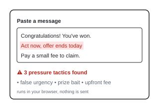

You paste in a message, an email, an advert or a sales pitch, and The Sniff Test highlights the pressure tactics in it: false urgency, too-good-to-be-true offers, requests for upfront payment and similar.
I was pitched an expensive online "AI agency" coaching programme and had to dig through reviews to see the pressure tactics for what they were. The Sniff Test does that first check for you. It's also the first project I built from scratch and finished (v1.1).
I'm deciding whether a v2 should use a language model instead of fixed rules. It would catch more, but it couldn't stay fully in the browser for free.